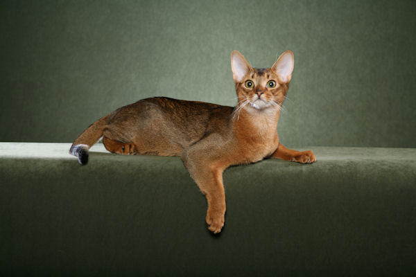
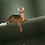
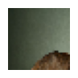
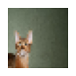
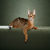
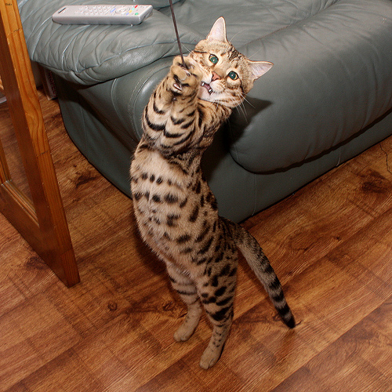

path = untar_data(url=URLs.PETS)
imgs = get_image_files(path/'images')
vid_path = '/ailearn/dataset/video/own/20230127_032459.mp4'vision
对于图片/视频的处理
xyzimg
处理xyz色彩空间的图片
open_img_cv2
open_img_cv2 (path:str)
使用cv2打开图片,并归一化到0~1以保证精度
bgr2xyz
bgr2xyz (img:<built-infunctionarray>)
把图片(float32)转换为xyz色彩空间
open_img_xyz
open_img_xyz (path)
使用xyz色彩空间打开图片
img = open_img_cv2(imgs[0])img.max()0.9607843img2 = open_img_xyz(imgs[0])img2.max()tensor(1.0391)xyz2rgb
xyz2rgb (img:torch.Tensor)
转换为rgb色彩空间并转换为uint8
img3 = xyz2rgb(img2)img3.max()0.9607848img3.shape(1, 400, 600, 3)show_array_rgb_img
show_array_rgb_img (img:<built-infunctionarray>)
打开一个rgb图片(PIL)
show_array_rgb_img(img3)[0]
show_xyz_img
show_xyz_img (img:torch.Tensor)
打开一组(n*c*x*y)xyz图片,返回一个列表
img2.shapetorch.Size([1, 3, 400, 600])show_xyz_img(img2)[0]
img_xyz_pipe
img_xyz_pipe ()
显示与打开图片的Transform形式
imgxyz = img_xyz_pipe()
imgxyz.decode(imgxyz(imgs[0]))[0]imgxyz.decode(imgxyz(imgs[0]))(#1) [PILImage mode=RGB size=600x400]pickimg
对图片进行拾取
PickImg
PickImg (device='cpu', return_grid=False)
Base class for all neural network modules.
Your models should also subclass this class.
Modules can also contain other Modules, allowing to nest them in a tree structure. You can assign the submodules as regular attributes::
import torch.nn as nn
import torch.nn.functional as F
class Model(nn.Module):
def __init__(self):
super().__init__()
self.conv1 = nn.Conv2d(1, 20, 5)
self.conv2 = nn.Conv2d(20, 20, 5)
def forward(self, x):
x = F.relu(self.conv1(x))
return F.relu(self.conv2(x))Submodules assigned in this way will be registered, and will have their parameters converted too when you call :meth:to, etc.
.. note:: As per the example above, an __init__() call to the parent class must be made before assignment on the child.
:ivar training: Boolean represents whether this module is in training or evaluation mode. :vartype training: bool
使用F.grid_sample拾取图片的类
PickImg.get_grid_mat
PickImg.get_grid_mat (val:torch.Tensor=None)
zeta=0, mult_x=1, mult_y=1, offset_x=0, offset_y=0
使用一组数据获取变换矩阵
PickImg.create_grid
PickImg.create_grid (mats:torch.Tensor, pick_size:list)
使用矩阵和picksize获取grid
mats.shape[0]需要与pick_size[0]相等
PickImg.create_grid_by_matval
PickImg.create_grid_by_matval (pick_size, matval:torch.Tensor=None)
zeta=0, mult_x=1, mult_y=1, offset_x=0, offset_y=0
使用一组数据和picksize获取grid
PickImg.create_basic_grid
PickImg.create_basic_grid (img:torch.Tensor, pick_size:list=None, permute=False)
使用img和pick_size获取一个基本的grid,相当于缩放到pick_size
PickImg.create_img_with_grid
PickImg.create_img_with_grid (img)
为img产生位置编码
PickImg.forward
PickImg.forward (img:torch.Tensor, pick_size:list=[32, 32], grid=None, matval=None, padding_mode='reflection', **kwargs)
Defines the computation performed at every call.
Should be overridden by all subclasses.
.. note:: Although the recipe for forward pass needs to be defined within this function, one should call the :class:Module instance afterwards instead of this since the former takes care of running the registered hooks while the latter silently ignores them.
| Type | Default | Details | |
|---|---|---|---|
| img | Tensor | 4d img | |
| pick_size | list | [32, 32] | like [32, 32] |
| grid | NoneType | None | Size([n,x,y,c]) |
| matval | NoneType | None | like [[0,0,0,0,0]] |
| padding_mode | str | reflection | padding_mode |
| kwargs | |||
| Returns | Tensor | grid_sample’s kwarg |
使用F.grid_sample拾取图片
PickImg.get_cut_matval
PickImg.get_cut_matval (n_x, n_y, return_tensor=True)
使用n_x与n_y获取切分图片的矩阵(matval)
PickImg.split_img
PickImg.split_img (img:torch.Tensor, n_x:int, n_y:int, pick_size:list, return_matval=True, **kwargs)
| Type | Default | Details | |
|---|---|---|---|
| img | Tensor | to use img(4d, batch now not work) | |
| n_x | int | x split | |
| n_y | int | y split | |
| pick_size | list | like [32,32], every img’s size | |
| return_matval | bool | True | |
| kwargs |
pick = PickImg()缩放至尺寸
picked_img = pick(img2)
show_xyz_img(picked_img)[0]使用matval:zeta=0, mult_x=1, mult_y=1, offset_x=0, offset_y=0
picked_img = pick(img2, [64,64], matval=pick.mat_val+0.2)
show_xyz_img(picked_img)[0]
splited_img, matval = pick.split_img(img2[0],2,2,[32,32])for im in show_xyz_img(splited_img): im.show()

组装回原图
class VideoGet:
def __init__(self,
src, # 视频路径,可以为本地地址或网络摄像头
queue # 队列
):
self.stream = cv2.VideoCapture(src)
self.grabbed, self.frame = self.stream.read()
self.stopped = False
self.q = queue
frame = self.frame
self.q.put(frame)
def start(self):
self.t = Thread(target=self._get, args=())
self.t.start()
def _get(self):
while not self.stopped:
if not self.grabbed:
self.stop()
else:
self.grabbed, self.frame = self.stream.read()
frame = self.frame
self.q.put(frame)
def stop(self):
self.stopped = Truesplited_img2.shapetorch.Size([3, 64, 64])def load_video(src, # 视频路径,可以为本地地址或网络摄像头
max_frame=None # 队列与拾取的上限
):
t = 0
q = Queue(max_frame if max_frame != None else 0)
v = VideoGet(src, q)
l = [q.get()[None,:]]
v.start()
t += 1
# time.sleep(0.2)
while True:
if not((v.stopped) and q.empty() or ((t >= max_frame) if max_frame != None else False)):
frame = q.get()
if not frame is None:
l.append(frame[None,:])
t += 1
else:
v.stop()
break
return np.vstack(tuple(l))
Video
VideoGet
VideoGet (src, queue)
Initialize self. See help(type(self)) for accurate signature.
| Details | |
|---|---|
| src | 视频路径,可以为本地地址或网络摄像头 |
| queue | 队列 |
使用opencv打开视频,使用队列和线程
load_video
load_video (src, max_frame=None)
| Type | Default | Details | |
|---|---|---|---|
| src | 视频路径,可以为本地地址或网络摄像头 | ||
| max_frame | NoneType | None | 队列与拾取的上限 |
把打开的视频转换为np数组
def get_pets_dataloaders(len_items=800, randomseed=42, item_tfms_size=460, batch_tfms_size=460, batch_tfms_min_scale=0.75, **kwarg):
path = untar_data(URLs.PETS)
pets = DataBlock(blocks = (ImageBlock, CategoryBlock),
get_items=(lambda x:get_image_files(x)[:len_items]),
splitter=RandomSplitter(seed=randomseed),
get_y=using_attr(RegexLabeller(r'(.+)_\d+.jpg$'), 'name'),
item_tfms=Resize(item_tfms_size),
batch_tfms=aug_transforms(size=batch_tfms_size, min_scale=batch_tfms_min_scale))
dls = pets.dataloaders(path/"images", **kwarg)
return dlsl.shapeTODO
使用ffmpeg保存视频
def get_one_test_img(imgs=None): pick_one = lambda l:l[random.randint(0, len(l)-1)] if not imgs is None: return open_img_xyz(pick_one(imgs)) else: path = untar_data(URLs.PETS) imgs = get_image_files(path/‘images’) return open_img_xyz(pick_one(imgs))
get_pets_dataloaders
get_pets_dataloaders (len_items=800, randomseed=42, item_tfms_size=460, batch_tfms_size=460, batch_tfms_min_scale=0.75, **kwarg)
获取一个pets数据集的dataloaders,用于cv测试
dls = get_pets_dataloaders(128)/opt/conda/lib/python3.8/site-packages/torch/cuda/__init__.py:497: UserWarning: Can't initialize NVML
warnings.warn("Can't initialize NVML")get_one_test_img
get_one_test_img (imgs=None)
从pets数据集或imgs随机提取并产生一张xyz色彩空间的图片(tensor)
img = get_one_test_img()show_xyz_img(img)[0]